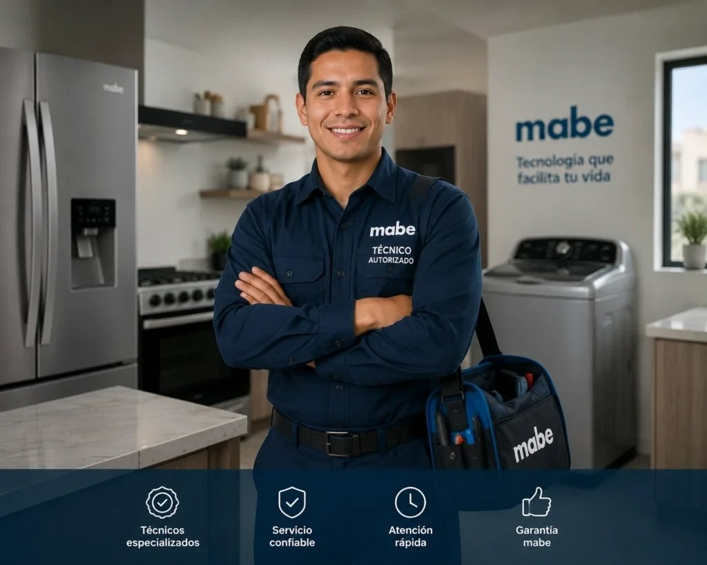

Reparación de secadoras Mabe en Ciudad Radial
Servicio técnico Mabe a domicilio en Ciudad Radial para secadoras: diagnóstico en el sitio, costo claro antes de reparar y garantía en la pieza y la mano de obra.

Técnico de secadoras Mabe en Ciudad Radial
Aquí hay muchas casas y residenciales con lavandería o terraza. Revisamos también las condiciones del lugar donde está el equipo: ventilación, humedad, tomacorrientes y desagües.
En casas, las variaciones de voltaje y la humedad de las áreas externas son causas frecuentes de fallas; te recomendamos protegerlos y te explicamos cómo.
Por qué mi secadora Mabe no seca o no calienta
Las causas más comunes son: ducto de salida de aire obstruido, filtro de pelusas saturado, resistencia o termostato dañados, sensor de humedad sucio o problemas del motor y la correa. Un buen diagnóstico evita cambiar piezas innecesarias.
Secadoras Mabe en apartamentos de Ciudad Radial
En apartamentos y torres es frecuente que la salida de aire sea larga o tenga curvas, lo que alarga el secado. Revisamos la instalación completa y te recomendamos mejoras.
Fallas de secadoras Mabe que atendemos en Ciudad Radial
- No seca o la ropa sale húmeda: Ducto de salida de aire obstruido, filtro de pelusas tapado o resistencia con falla.
- No calienta: Resistencia (en eléctricas), termostato o fusible térmico (en eléctricas y a gas), o ignitor (a gas).
- Tarda demasiado en secar: Ducto largo o sucio, filtro lleno, sensor de humedad sucio o poca ventilación del cuarto.
- Hace ruido o golpea: Rodillos, correa o rodamiento desgastados, o prendas atrapadas.
- Se detiene a mitad del ciclo: Sobrecalentamiento por ducto tapado, sensor de temperatura o puerta que no cierra bien.
Consejo de mantenimiento
Una vez al año, pide una revisión de resistencias, sensores y rodillos.
Preguntas frecuentes en Ciudad Radial
¿Reparan secadoras Mabe en Ciudad Radial?
Sí. Damos servicio técnico a domicilio de secadoras Mabe en Ciudad Radial (Ciudad de Panamá). Escríbenos por WhatsApp con el modelo y la falla y te confirmamos la visita.
¿Cuánto tardan en llegar a Ciudad Radial?
Coordinamos visitas en 24 a 48 horas en la mayoría de las zonas, según disponibilidad.
¿Cuánto cuesta el servicio técnico de la secadora Mabe en Ciudad Radial?
Te confirmamos el costo de la visita antes de ir y el de la reparación antes de empezar, según la falla y el modelo.
Guías de secadoras Mabe
Otros equipos Mabe en Ciudad Radial
Secadoras Mabe en zonas cercanas
Búsquedas relacionadas en Ciudad Radial
¿Tu secadora Mabe falla en Ciudad Radial?
Escríbenos por WhatsApp con el equipo, el modelo y la falla. Te confirmamos disponibilidad para tu zona en minutos.